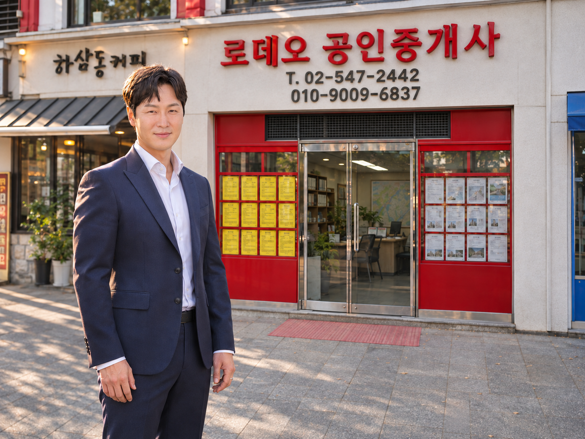
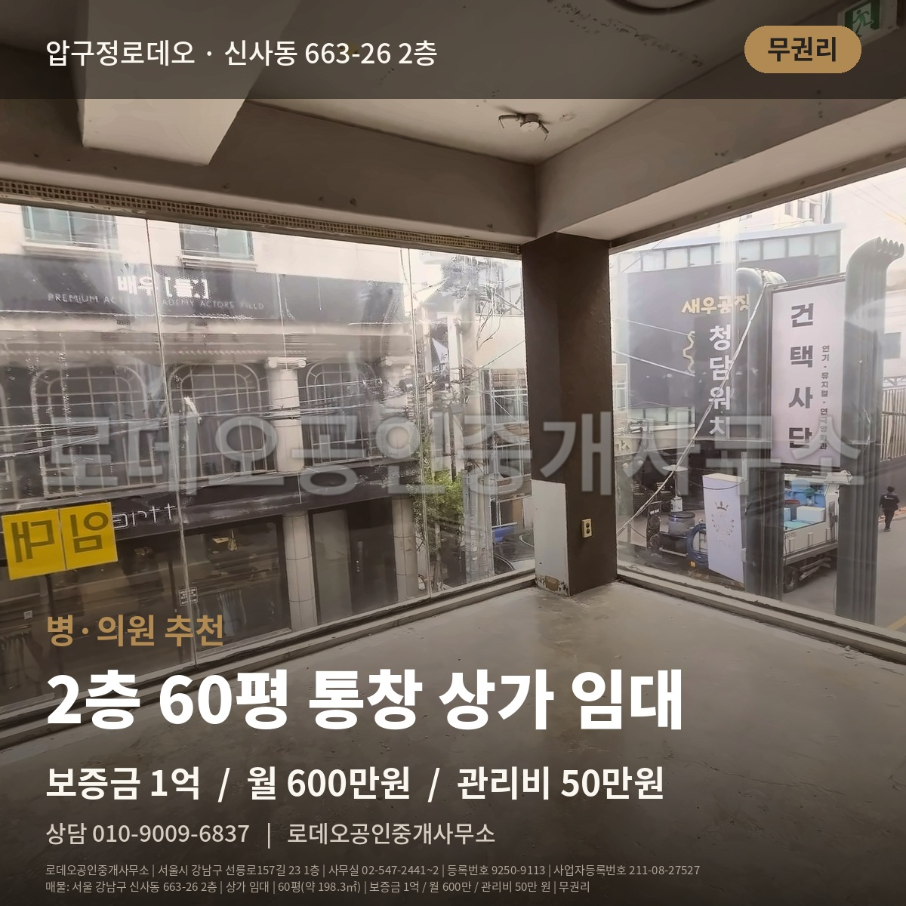

상가 임대
전면 노출, 유동 동선, 월세와 권리금을 함께 봅니다.
상가 임대 문의 →
APGUJEONG RODEO · SINCE 1982
압구정로데오에서 내 업종에 맞는 자리를 찾고, 계약 조건부터 입점 후 생기는 문제까지 함께 살핍니다.
전면 노출, 유동 동선, 월세와 권리금을 함께 봅니다.
상가 임대 문의 →매입 목적과 예산을 듣고 기존 임대 조건을 살핍니다.
상가 매매 문의 →인원, 동선, 주차와 입주 일정을 기준으로 찾습니다.
사무실 이전 문의 →층수, 노출, 면적과 개원 전 확인할 시설 조건을 살핍니다.
병의원 개원 문의 →출점 후보지를 비교하고 계약·재계약 조건을 조율합니다.
상권·계약 상담 문의 →SINCE 1982
1982년부터 압구정로데오 같은 자리에서 상가를 중개해 온 로데오공인중개사무소입니다.

PROJECTS
50평 이상, 거리에서 잘 보이는 저층, 무권리 조건을 우선해 검토한 매물 사례입니다. 전면 통창과 코너 채광이 특징입니다.
기존 홍보 자료 기준이며 현재 임대 여부와 개설 가능 여부는 별도 확인이 필요합니다.
비슷한 조건 상담하기CONTACT
업종, 희망 지역, 예산을 알려주시면 먼저 확인해야 할 조건부터 같이 짚어드립니다.
카카오톡으로 상담하기김태욱 공인중개사
010-9009-6837서울 강남구 선릉로157길 23, 1층